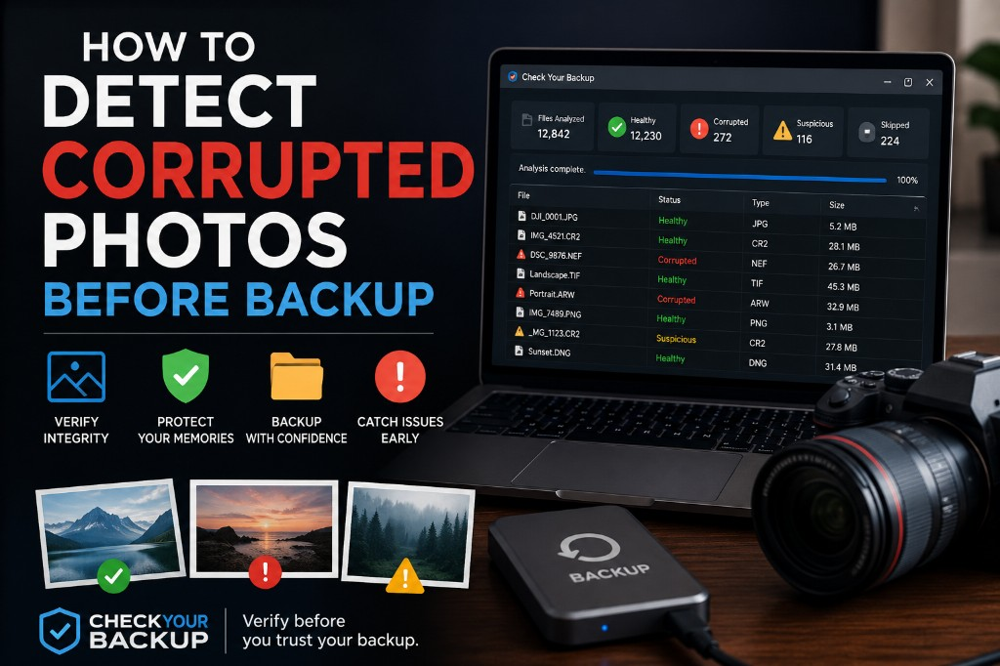

How to Detect Corrupted Photos Before Backup
Most backup workflows copy files exactly as they are. If a photo is already corrupted, damaged or unreadable, the backup will copy that problem too, often without any warning.
The safest approach is to verify your photos before you back them up. This guide explains how to detect corrupted image files in JPG, TIFF, PNG and RAW formats before they spread across your NAS, external drives or cloud storage.

Why Verify Photos Before Backup?
Backup software typically confirms that files exist and can be transferred. It does not usually open each image to check whether the contents are valid.
A corrupted photo may still look normal from the outside:
- Correct filename and extension
- Expected file size
- Normal folder location
- No error during the backup job
The damage only becomes visible when someone tries to open the file, sometimes years later, when every backup copy contains the same problem.
For more on why backups miss this, see Why NAS Backups Don't Detect Corrupted Photos.
Signs a Photo May Be Corrupted
Not every damaged file is obvious. Watch for these warning signs:
- The file fails to open in your viewer or editor
- Partial images, missing areas or unexpected colors
- Decoding errors in Lightroom, Photoshop or similar tools
- Files that report a large size but contain no usable image data
- Sudden slowdowns or crashes when opening specific folders
Silent corruption (sometimes called bit rot) can develop over time without any visible change until you try to open the file.
Manual Checks vs Automated Verification
You can spot-check photos manually by opening them one by one. That works for small folders, but it does not scale for large archives with thousands of RAW files.
Automated integrity verification opens each supported file read-only and confirms whether the image data can actually be decoded. This approach is faster, repeatable and suitable for entire photo libraries.
Step-by-Step: Verify Before You Back Up
Follow this workflow before sending files to NAS, cloud or external storage:
- Select the source folder: the working copy you plan to archive, not an old backup.
- Run an integrity scan: open and validate every supported image file read-only.
- Review the results: identify corrupted, suspicious or unreadable files.
- Recover healthy copies: if an older backup or memory card still has a good version, restore it first.
- Back up only after verification: archive once you know the files are readable.
- Repeat periodically: schedule checks on long-term archives, not just new imports.
This order matters. Verifying after backup tells you what you already copied, including any corruption. Verifying before backup gives you a chance to fix problems first.
Formats You Should Verify
Any archive that includes photographer workflows should check at least:
- JPG / JPEG
- TIFF / TIF
- PNG
- NEF (Nikon RAW)
- CR2 (Canon RAW)
- ARW (Sony RAW)
- DNG (Adobe Digital Negative)
Each format should be opened and decoded, not just checked by filename or file size.
What to Do When You Find a Corrupted File
If a scan flags a damaged image, act before it enters your backup chain:
- Search older drives, memory cards or previous project folders for an intact copy
- Do not overwrite the damaged file until you confirm a healthy replacement
- Remove corrupted files from the set you plan to archive
- Document findings in a report for your own records or client deliverables
- Re-scan after recovery to confirm the replacement is healthy
If every copy is damaged, recovery may no longer be possible. That is why early detection before backup is so important.
How Check Your Backup Helps
Check Your Backup was built for exactly this workflow. The software:
- Scans entire folders recursively
- Opens supported image files read-only
- Flags corrupted, suspicious and unreadable files
- Generates PDF and CSV integrity reports
- Never modifies or uploads your files
All analysis runs locally on your Windows or macOS computer. Your photos stay on your machine throughout the entire process.
Best Practices for Photographers
- Verify new imports before they join your main archive
- Check archives before major NAS or cloud migrations
- Combine the 3-2-1 backup strategy with periodic integrity checks
- Keep a report after each scan for long-term documentation
- Do not assume a successful backup job means every file is healthy
Read the full story behind this tool in How I Discovered Corrupted Files in My Photo Archive.
Conclusion
Detecting corrupted photos before backup is one of the most effective ways to protect a photo archive. Backups protect against loss; integrity verification protects against silent corruption.
Open your files. Verify them read-only. Back up only what you know is still readable. Your future self, and every photo you cannot reshoot, will thank you.
Download Check Your Backup
Detect corrupted photos before they spread across your backups.
Download Free